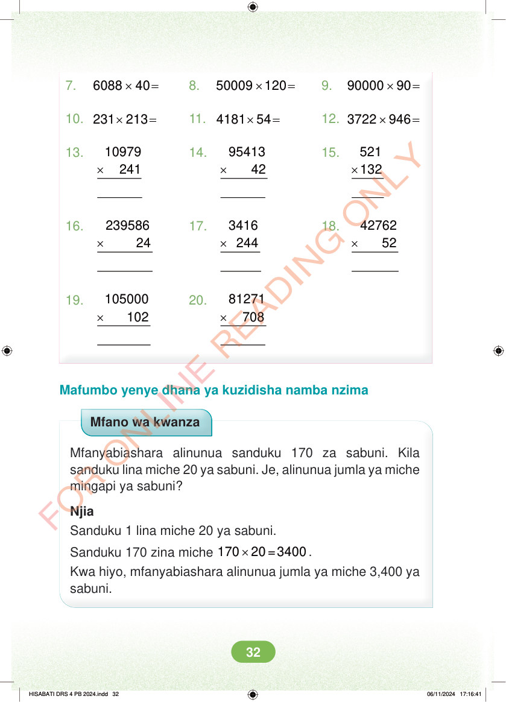

7. × = 6088 40 8. × = 50009 120 9. × = 90000 90 10. × = 231 213 11. × = 4181 54 12. × = 3722 946 13. × 10979 241 14. × 95413 42 15. × 521 132 16. × 239586 24 17. × 3416 244 18. × 42762 52 19. × 105000 102 20. × 81271 708 Mafumbo yenye dhana ya kuzidisha namba nzima Mfano wa kwanza Mfanyabiashara alinunua sanduku 170 za sabuni. Kila sanduku lina miche 20 ya sabuni. Je, alinunua jumla ya miche mingapi ya sabuni? Njia Sanduku 1 lina miche 20 ya sabuni. Sanduku 170 zina miche × 170 20 =3400 . Kwa hiyo, mfanyabiashara alinunua jumla ya miche 3,400 ya sabuni. HISABATI DRS 4 PB 2024.indd 32 HISABATI DRS 4 PB 2024.indd 32 06/11/2024 17:16:41 06/11/2024 17:16:41